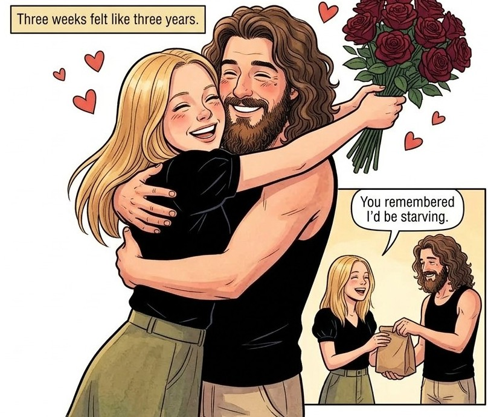

Lange
afstand
is…
afstand
is…
(wij weten ervan mee)
lange afstand is…
voice messages, video calls en veel te veel hartjes.

lange afstand is…
op een kaart het midden zoeken.

lange afstand is…
een hele dag op de trein.

(in Oekraïne vliegt er niks)
lange afstand is…
drie weken die voelen als drie jaar.

En toch: elke keer de moeite.
Loveke
Born from Love. Worn on the Street.
Warsaw, deel 2: woensdag